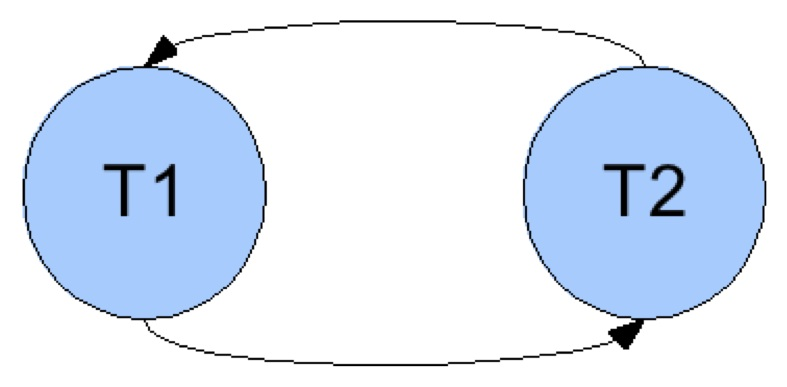
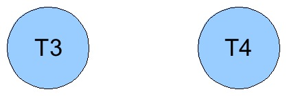

Entrega: 05/12
Implementar um algoritmo de teste de processamento concorrente de transações. Este algoritmo ajudará o aluno a compreender gargalos no processamento de transações que motivaram o desenvolvimento de diversos sistemas de processamento distribuído de transações.
Por exemplo:
|
Escalonamento S1 T1:r(x), T2:r(x), T2:w(x), T1:w(x)  |
Escalonamento S2 T3:r(x), T3:r(y), T4:r(x), T3:w(y)  |
|---|---|
| escalonamento não é serial | escalonamento é serial |
A entrada deve ser feita pela entrada padrão (stdin). O
arquivo é formado por uma sequência de linhas, onde cada linha
representa uma transação chegando. Cada linha tem 4 campos: o primeiro é
o tempo de chegada, o segundo é o identificador da transação, o
terceiro é a operação (R=read, W=write, C=commit) e o quarto o atributo
que será lido/escrito. Estas linhas estão ordenadas pelo primeiro campo
(tempos menores no início indicando a linha do tempo).
A saída deve ser feita pela saída padrão (stdout). O
arquivo será composto por uma sequência de linhas. Uma linha para cada
escalonamento. Cada linha tem 3 campos separados por espaço (um único
espaço entre cada par de campos). O primeiro campo é o identificador do
escalonamento. O segundo campo é a lista de transações. E o terceiro é a
garantia da seriabilidade ("...determinada execução e a execução serial sempre produzem o mesmo resultado uma da outra." [C.J. Date, 2003]).
Exemplo de arquivos com uma entrada e uma saída válida:
| Entrada | Saída |
|
1 1 R X
2 2 R X
3 2 W X
4 1 W X
5 2 C -
6 1 C -
7 3 R X
8 3 R Y
9 4 R X
10 3 W Y
11 4 C -
12 3 C -
|
1 1,2 NAO
2 3,4 SIM
|
O trabalho deve ser implementado de forma que possa ser compilado e executado nas servidoras de computação do Departamento de Informática.
O nome do executável deve ser conflito.
Não deve ter nenhuma opção de linha comando.
Além dos arquivos fonte, deve acompanhar um makefile e
um relatório com no máximo 2 páginas contendo a documentação sintetizada
do sistema implementado. Qualquer particularidade deve estar descrita
neste texto, como: algoritmo de detecção de ciclo em grafo.
Para compilar será usado o comando make (sem nenhum
parâmetro), portanto preparem o Makefile para fazer isso mesmo que o
programa seja implementado em linguagens interpretadas (e.g., Java).
Para testar será executado um script como o abaixo.
$ ./conflito < teste.in > teste.out $ diff teste.sol teste.outOnde
teste.in é o arquivo de entrada do teste e teste.sol é o esperado como saída.O trabalho deve ser empacotado em um arquivo login.tar.gz, onde
"login" é uma string com o login do aluno nas servidoras do DInf. Ao
descompactar este arquivo deverá ser criado um diretório de nome "login"
que conterá todos os demais arquivos. O make e o script acima deverão funcionar dentro deste diretório (não em subdiretórios).
Este arquivo deve ser enviado por e-mail ao endereço do professor com o assunto "CI218-trab1 " (exatamente). IMPORTANTE: Minha caixa de email usa o assunto do email como filtro.
O trabalho é individual.